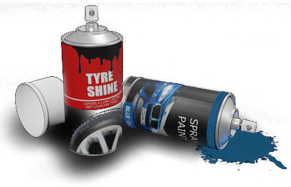
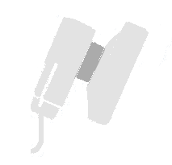
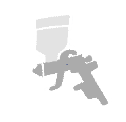
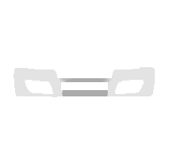
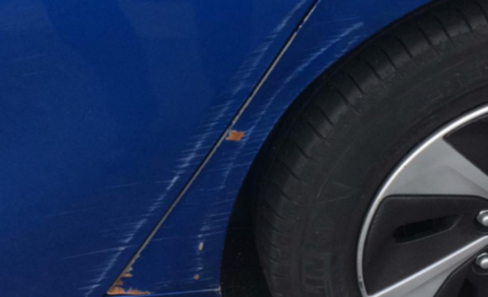
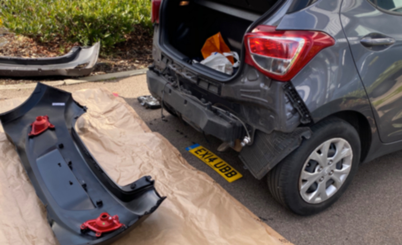
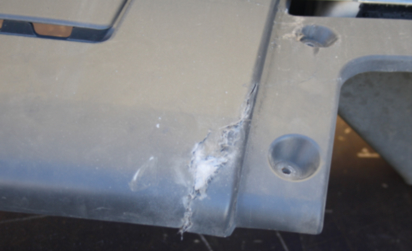
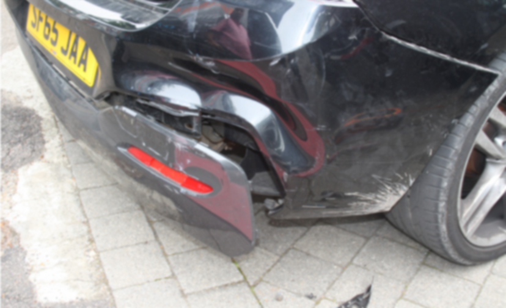

MOBILE CAR BODY
REPAIR SPECIALIST
Specialising in dents, scratches and resprays
OUR SERVICESSpecialising in dents, scratches and resprays
OUR SERVICESWe specialise in car bodywork repair, providing mobile repair service to any vehicle bodywork damaged at your convenience. We will bring our mobile bodyshop to you, at home or work, at a time to suit you.We offer a range of car bodywork repair services to help get your vehicle looking great again. View all our services to find the type of service you need for your vehicle.




A collection of some of our completed work, showing the before, during and after.

This is when your alloy wheels have been scratched against the kerb and are showing signs of damage. Alloy wheels refurbishment is a cost effective way to improve their appearance, compared to buying a replacement alloy wheel.

This is a service that specialised in scuffs and scratches removal from your vehicle from vandals such as key scratches, another car or object marks .etc and there are many ways for Mobile Car Body Repair to remove these scratches depending on the damaged area. These include flat and machine polishing using a compound formula to remove the damages, individual panels and at other times, we may need to mix the correct paint and spray the damaged area.

SMART stands Small to Medium Area Repair Technology. It’s a technique for repairing small areas of car bodywork damage. SMART repair uses specialist tools, materials and paints to blend the repair with the surrounding panel. It’s much quicker and cheaper than traditional car repair. car respray, bumper repair and custom work.

This is changing the colour of the vehicle and the cost of respray work on your car will vary depending on the size of the job and whether other work needs to be carried out first, such as repairing dents and other damage. It’s a highly skilled job that should leave your car looking as good as new.

We work 5 days a week either coming to your home or your work place. We cover East London, South London and the whole of Kent.
Speak to us for a free no obligation quote or you can also send a text message with a picture of what you want repaired and we will respond with an estimate.